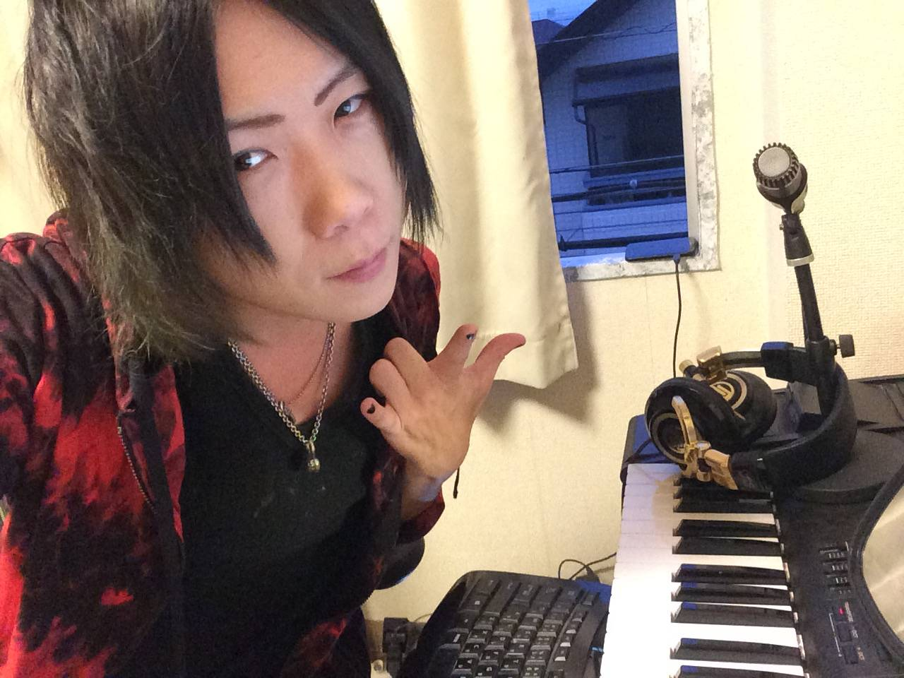

members
2匹のねこたち

Vocal
Vocal / Guitar
しゅうShu
早稲田卒バイリンガルギター元ITエンジニア
早稲田大学卒のバイリンガルで、英語も自在に操る軍団の頭脳派。 ギターを携え、ユニットのボーカルを担当する。 前職はITエンジニアという異色の経歴を持つが、ひょんなことからアイドルの道へ。 みんなに夢とドキドキなエンターテインメントを届けることをモットーに、今日も歌う。
しゅうとLINEでつながる →
Visual
Visual / Comedy
さとしっくすSatosix
ダンスピアノフルートギャグセンMAX
ダンス・ピアノ・フルートまでこなすマルチプレイヤー。 軍団のビジュアル＆お笑い担当として、見る者を確実に抱腹絶倒させるギャグセンスを武器に暴れまわる。 ステージの外でもギャップで沼に落とすタイプ。気づいたらファンになっているはず。
さとしっくすとLINEでつながる →